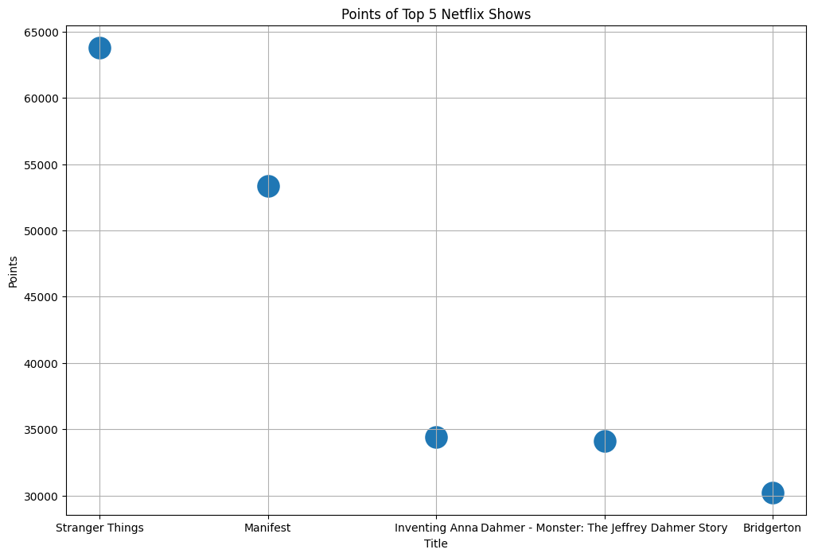
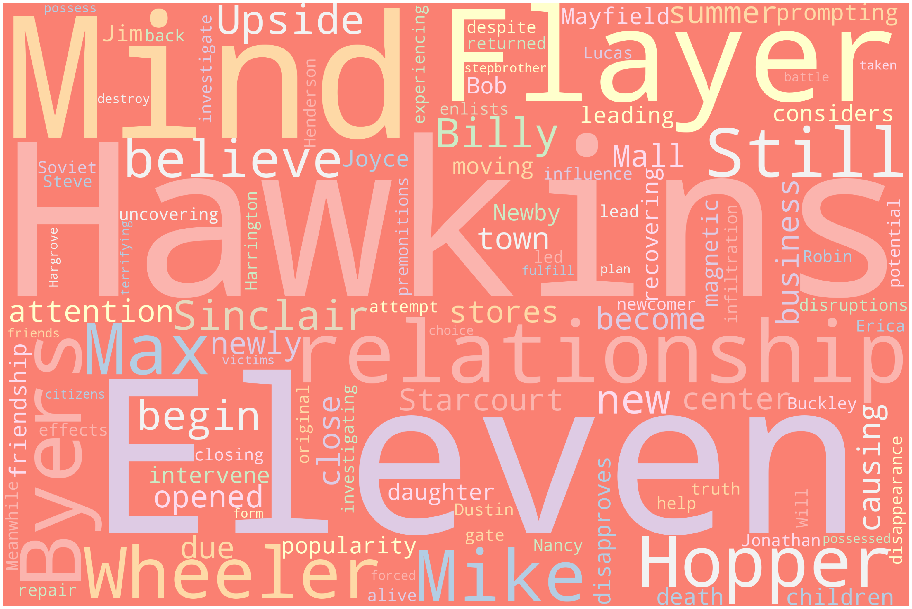
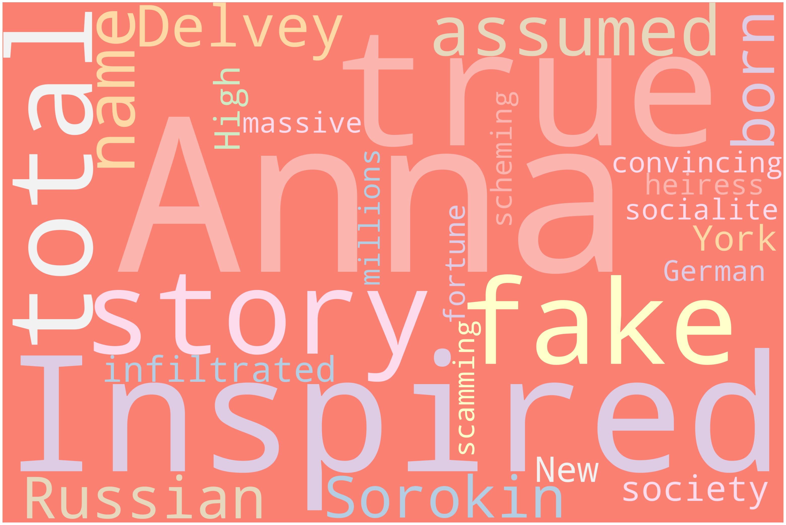
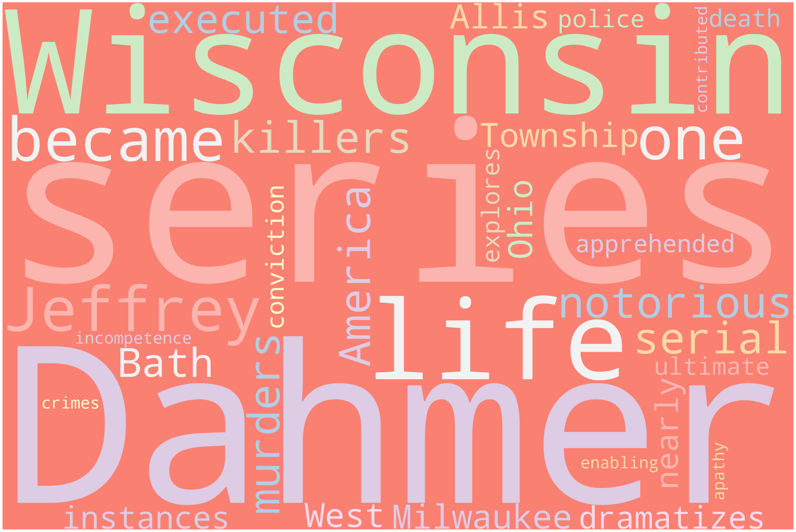
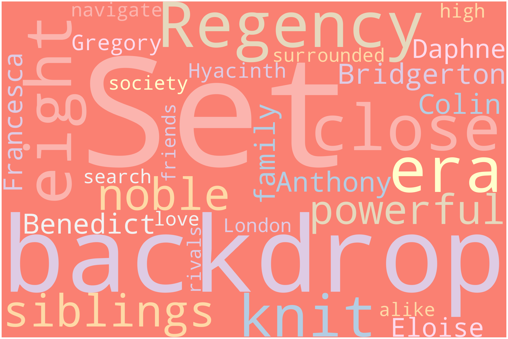

Code
import requests
import json
import re
import pandas as pd
import numpy as npI have a pretty diverse group of data. With the four data sources I utilized, I have decided to spread my analysis among several datasets. To do this, I will first provide a summary of the data collected and then isolate certain datasets throughout the rest of the project.
The data types consist of numerical and categorical data. After cleaning, I am left with eight variables. These include: - Chart Position: The song’s position on the International Apple Music chart. - Artist and Title: The creator of the song and the song’s title - Position Duration: The length of time the song held that position. - Peak: The highest position the song has reached ever. - (x?): The amount of times the song has visited its current position. - Points: The amount of points the song has accumulated; justifying its position. - Country: The country in which the song originates. - Country Rank: The rank of the song in various countries.
The data types consist of predominantly numerical data. After cleaning, I am left with twelve variables. These include:
The data types consist of predominantly numerical data. After cleaning, I am left with two variables. These include: The title of the television show on Netflix and the points accumulated by each show.
The data types consist of predominantly numerical data. After cleaning, I am left with four variables. These include: - Entity: The country being analyzed. - Code: The official three- word abbreviation assigned to each country. - Score: The country average of life satisfaction. The scale used is the Cantril Ladder, which ranges from 0 to 10 (“0” being the lowest rating of life satisfaction and “10” being the highest rating of life satisfaction). - GDP: The Gross Domestic Product (GDP) per capita in international dollars (a normalized currency they used for comparison); this dataset borrowed statistics from 2017.
The data types consist of predominantly numerical data. After cleaning, I am left with four variables. These include:
import requests
import json
import re
import pandas as pd
import numpy as npappledf = pd.read_csv("../websitedata/apple_py.csv")
#print(appledf.describe())
newAppledf = appledf.drop(["Artist and Title", "Country", "Unnamed: 0"], axis=1)
newAppledf = newAppledf.reset_index(drop=True)
print(newAppledf.describe()) Chart Position Position Duration Peak (x?) \
count 836.000000 836.000000 836.000000 836.000000
mean 42.502392 308.492823 1.671053 32.011962
std 49.812835 427.604273 0.724705 47.504048
min 1.000000 6.000000 1.000000 1.000000
25% 5.000000 68.000000 1.000000 3.000000
50% 30.000000 132.000000 2.000000 14.000000
75% 62.000000 393.000000 2.000000 32.000000
max 198.000000 1982.000000 3.000000 177.000000
Points Country Rank
count 836.000000 836.000000
mean 7506.009569 61.480861
std 5080.042094 52.836577
min 1056.000000 1.000000
25% 2739.000000 16.000000
50% 5425.000000 48.500000
75% 12359.000000 93.000000
max 16920.000000 200.000000 import seaborn as sns
import matplotlib.pyplot as plt
netflixdf = pd.read_csv("../websitedata/netflix_py.csv")
netflixdf["Points"] = netflixdf["Points"].str.replace(',', '').astype(float)
netflixdf = netflixdf.drop(columns={"Unnamed: 0"})
print(netflixdf.dtypes)
print(netflixdf.describe())
net5 = netflixdf.head(5)
#netshow = net5["Title"]
#netval = net5["Points"]
plt.figure(figsize=(12,8))
sns.scatterplot(x="Title",y="Points",data=net5, s = 500)
plt.title("Points of Top 5 Netflix Shows")
plt.grid(True)
plt.show()Title object
Points float64
dtype: object
Points
count 25.000000
mean 26272.160000
std 11149.579688
min 15699.000000
25% 18889.000000
50% 23757.000000
75% 28765.000000
max 63800.000000
spotifydf = pd.read_csv("../websitedata/spotify_py.csv")
#print(spotifydf.dtypes)
newspotdf = spotifydf.drop(columns={"Unnamed: 0.1", "Unnamed: 0", "Artist Name", "Track Name", "Album Name"})
# Summary
print(newspotdf.describe()) Valence Danceability Energy Loudness Speechiness \
count 393.000000 393.000000 393.000000 393.000000 393.000000
mean 0.384960 0.662466 0.564512 -7.636957 0.186602
std 0.212783 0.150736 0.168313 2.881555 0.141246
min 0.036100 0.193000 0.021800 -31.160000 0.025400
25% 0.214000 0.547000 0.452000 -9.013000 0.066800
50% 0.355000 0.683000 0.555000 -7.355000 0.140000
75% 0.530000 0.780000 0.688000 -5.786000 0.274000
max 0.949000 0.934000 0.922000 -2.176000 0.883000
Acousticness Liveness Tempo Album Release Year
count 393.000000 393.000000 393.000000 393.000000
mean 0.243078 0.183383 121.734425 2017.885496
std 0.254899 0.134848 30.877509 4.164919
min 0.000052 0.028600 65.041000 2009.000000
25% 0.038600 0.105000 94.795000 2015.000000
50% 0.158000 0.126000 121.975000 2019.000000
75% 0.374000 0.206000 143.059000 2021.000000
max 0.988000 0.834000 201.800000 2023.000000 import pandas as pd
happygdp = pd.read_csv("../websitedata/happy_py.csv")
happygdp["GDP"] = happygdp["GDP"].str.replace(',', '').astype(float)
#print(happygdp.dtypes)
lifesat = happygdp.drop(columns={"Entity", "Code", "Unnamed: 0"})
#summary
print(lifesat.describe()) Score GDP
count 137.000000 137.000000
mean 5.539755 18187.739781
std 1.139908 24494.805589
min 1.859000 363.700000
25% 4.723900 2255.200000
50% 5.684300 6776.500000
75% 6.333800 24826.800000
max 7.804200 126426.100000Examine the correlations between variables using correlation matrices, heat-maps, or scatter plots. Identify which variables are positively, negatively, or not correlated, which can guide further analysis.
print(newAppledf.corr()) Chart Position Position Duration Peak (x?) \
Chart Position 1.000000 0.537127 -0.006928 -0.043663
Position Duration 0.537127 1.000000 -0.234745 0.250226
Peak -0.006928 -0.234745 1.000000 -0.438067
(x?) -0.043663 0.250226 -0.438067 1.000000
Points -0.788348 -0.543229 0.094603 -0.179048
Country Rank 0.529540 0.329221 -0.048784 0.019253
Points Country Rank
Chart Position -0.788348 0.529540
Position Duration -0.543229 0.329221
Peak 0.094603 -0.048784
(x?) -0.179048 0.019253
Points 1.000000 -0.518561
Country Rank -0.518561 1.000000 print(newspotdf.corr()) Valence Danceability Energy Loudness Speechiness \
Valence 1.000000 0.246692 0.398002 0.307874 0.040146
Danceability 0.246692 1.000000 -0.041714 0.128736 -0.079113
Energy 0.398002 -0.041714 1.000000 0.717260 0.179141
Loudness 0.307874 0.128736 0.717260 1.000000 0.059715
Speechiness 0.040146 -0.079113 0.179141 0.059715 1.000000
Acousticness -0.034774 -0.349418 -0.385829 -0.376252 -0.040905
Liveness -0.041324 -0.066942 0.130201 0.082523 0.161238
Tempo 0.050777 -0.063817 0.135110 0.086825 0.117097
Album Release Year 0.048786 0.154002 -0.074721 0.072098 -0.252975
Acousticness Liveness Tempo Album Release Year
Valence -0.034774 -0.041324 0.050777 0.048786
Danceability -0.349418 -0.066942 -0.063817 0.154002
Energy -0.385829 0.130201 0.135110 -0.074721
Loudness -0.376252 0.082523 0.086825 0.072098
Speechiness -0.040905 0.161238 0.117097 -0.252975
Acousticness 1.000000 -0.126337 -0.089189 0.037384
Liveness -0.126337 1.000000 0.041149 -0.094607
Tempo -0.089189 0.041149 1.000000 0.034514
Album Release Year 0.037384 -0.094607 0.034514 1.000000 print(lifesat.corr()) Score GDP
Score 1.000000 0.695397
GDP 0.695397 1.000000import wikipedia
wikipedia.search("Stranger Things", results=10, suggestion=False)
page = wikipedia.WikipediaPage("Stranger Things (season 3)").content
# this gets text content from the page https://en.wikipedia.org/wiki/Stranger_Things_(season_3)
# MODIFIED FROM
# https://towardsdatascience.com/simple-wordcloud-in-python-2ae54a9f58e5
def generate_word_cloud(my_text):
from wordcloud import WordCloud, STOPWORDS
import matplotlib.pyplot as plt
# exit()
# Import package
# Define a function to plot word cloud
def plot_cloud(wordcloud):
# Set figure size
plt.figure(figsize=(40, 30))
# Display image
plt.imshow(wordcloud)
# No axis details
plt.axis("off");
# Generate word cloud
wordcloud = WordCloud(
width = 3000,
height = 2000,
random_state=1,
background_color='salmon',
colormap='Pastel1',
collocations=False,
stopwords = STOPWORDS).generate(my_text)
plot_cloud(wordcloud)
plt.show()
strangerPage = "In the summer of 1985, in Hawkins, the newly opened Starcourt Mall has become the center of attention in town, causing other stores to close their business due to its popularity. Jim Hopper disapproves of Mike Wheeler's relationship with his daughter Eleven, prompting him to intervene in their relationship, and leading to Eleven's friendship with Max Mayfield. Still recovering from Bob Newby's death, Joyce Byers considers moving out of Hawkins with her children. However, magnetic disruptions lead her to believe that the Upside Down has returned, so she enlists Hopper's help in uncovering the truth. While Mike and Lucas Sinclair attempt to repair his relationship with Eleven, Will Byers begins experiencing premonitions from the Upside Down, despite Eleven's closing of the original gate that led to his disappearance. He believes the Mind Flayer is still alive and back in Hawkins. As Nancy Wheeler and Jonathan Byers investigate the effects of the Mind Flayer's influence, Dustin Henderson, Steve Harrington, newcomer Robin Buckley, and Erica Sinclair begin investigating a potential Soviet infiltration of Hawkins. Meanwhile, Max's stepbrother Billy Hargrove is taken over by the Mind Flayer, forced to possess other citizens of Hawkins to fulfill the Mind Flayer's new plan. Eleven and her friends have no choice but to battle Billy, the other possessed victims, and destroy the Mind Flayer in its new and terrifying form, once and for all."
generate_word_cloud(strangerPage)
wikipedia.search("Manifest", results=10, suggestion=False)
page = wikipedia.WikipediaPage("Manifest (TV series)").content
# this gets text content from the page for Manifest the TV show
# MODIFIED FROM
# https://towardsdatascience.com/simple-wordcloud-in-python-2ae54a9f58e5
def generate_word_cloud(my_text):
from wordcloud import WordCloud, STOPWORDS
import matplotlib.pyplot as plt
# exit()
# Import package
# Define a function to plot word cloud
def plot_cloud(wordcloud):
# Set figure size
plt.figure(figsize=(40, 30))
# Display image
plt.imshow(wordcloud)
# No axis details
plt.axis("off");
# Generate word cloud
wordcloud = WordCloud(
width = 3000,
height = 2000,
random_state=1,
background_color='salmon',
colormap='Pastel1',
collocations=False,
stopwords = STOPWORDS).generate(my_text)
plot_cloud(wordcloud)
plt.show()
page = "While traveling from Jamaica to New York City, Montego Air Flight 828 experiences a brief period of severe turbulence. When they land at Stewart International Airport in Newburgh, New York, the plane's 191 passengers and crew learn from NSA deputy director Robert 'Bobby' Vance that over five and a half years have passed while they were in the air, during which time they were presumed dead. As they rejoin society, the passengers must face the fact that their lives—and loved ones—are not the same as they were, while they also begin to experience guiding voices and visions representing events yet to occur, referred to as 'callings'."
generate_word_cloud(page)wikipedia.search("Inventing Anna", results=10, suggestion=False)
#print(page)
page = wikipedia.WikipediaPage("Inventing Anna").content
# this gets text content from the page for Inventing Anna the TV show
# MODIFIED FROM
# https://towardsdatascience.com/simple-wordcloud-in-python-2ae54a9f58e5
def generate_word_cloud(my_text):
from wordcloud import WordCloud, STOPWORDS
import matplotlib.pyplot as plt
# exit()
# Import package
# Define a function to plot word cloud
def plot_cloud(wordcloud):
# Set figure size
plt.figure(figsize=(40, 30))
# Display image
plt.imshow(wordcloud)
# No axis details
plt.axis("off");
# Generate word cloud
wordcloud = WordCloud(
width = 3000,
height = 2000,
random_state=1,
background_color='salmon',
colormap='Pastel1',
collocations=False,
stopwords = STOPWORDS).generate(my_text)
plot_cloud(wordcloud)
plt.show()
page = "Inspired by the true story of a total fake. Under the assumed name Anna Delvey, Russian-born Anna Sorokin infiltrated New York's High society by convincing them she was a German socialite and an heiress to a massive fortune, all while scheming and scamming them out of millions."
generate_word_cloud(page)
wikipedia.search("Dahmer", results=10, suggestion=False)
page = wikipedia.WikipediaPage("Dahmer - Monster: The Jeffrey Dahmer Story").content
#print(page)
# this gets text content from the page for Dahmer - Monster: The Jeffrey Dahmer Story the TV show
# MODIFIED FROM
# https://towardsdatascience.com/simple-wordcloud-in-python-2ae54a9f58e5
def generate_word_cloud(my_text):
from wordcloud import WordCloud, STOPWORDS
import matplotlib.pyplot as plt
# exit()
# Import package
# Define a function to plot word cloud
def plot_cloud(wordcloud):
# Set figure size
plt.figure(figsize=(40, 30))
# Display image
plt.imshow(wordcloud)
# No axis details
plt.axis("off");
# Generate word cloud
wordcloud = WordCloud(
width = 3000,
height = 2000,
random_state=1,
background_color='salmon',
colormap='Pastel1',
collocations=False,
stopwords = STOPWORDS).generate(my_text)
plot_cloud(wordcloud)
plt.show()
page = "The series is about the life of Jeffrey Dahmer, and how he became one of the most notorious serial killers in America. His murders were executed in Bath Township, Ohio, West Allis, Wisconsin, and Milwaukee, Wisconsin between 1978 and 1991. The series dramatizes instances where Dahmer was nearly apprehended until his ultimate conviction and death. It also explores how police incompetence and apathy contributed to enabling his crimes."
generate_word_cloud(page)
wikipedia.search("Bridgerton", results=10, suggestion=False)
page = wikipedia.WikipediaPage("Bridgerton").content
#print(page)
# this gets text content from the page for Bridgerton the TV show
# MODIFIED FROM
# https://towardsdatascience.com/simple-wordcloud-in-python-2ae54a9f58e5
def generate_word_cloud(my_text):
from wordcloud import WordCloud, STOPWORDS
import matplotlib.pyplot as plt
# exit()
# Import package
# Define a function to plot word cloud
def plot_cloud(wordcloud):
# Set figure size
plt.figure(figsize=(40, 30))
# Display image
plt.imshow(wordcloud)
# No axis details
plt.axis("off");
# Generate word cloud
wordcloud = WordCloud(
width = 3000,
height = 2000,
random_state=1,
background_color='salmon',
colormap='Pastel1',
collocations=False,
stopwords = STOPWORDS).generate(my_text)
plot_cloud(wordcloud)
plt.show()
page = "Set against the backdrop of the Regency era, the eight close-knit siblings of the noble and powerful Bridgerton family – Anthony, Benedict, Colin, Daphne, Eloise, Francesca, Gregory and Hyacinth – navigate London high society in search of love, surrounded by friends and rivals alike."
generate_word_cloud(page)
I hypothesize the self- reported life satisfaction averages will have a significant influence on the sentiment of media and music topping rankings.
For the Apple dataframe, each variable seems to contain a very wide range of values. The variable with the least amount of deviation is the Peak, which has a standard deviation of -0.724705. This makes sense as it signifies the highest position attained by a song, which would be representative of a feat for most. Aside from that, the variables seem to mostly be negatively correlated, with the highest negative correlation being between Points and Chart Position. This means as the song get higher in chart position (the number of position decreases), the amount of points accumulated increases.
Spotify appears to have barely any deviation for most variables. The highest standard deviation belongs to Album Release Year. This makes sense, as the data frame contains information on artists’ song attributes across their years of their discography. The variables seem to have a very mixed outcome when looking at the amount of positive and negative correlation. The highest positive correlation belongs to Energy and Loudness, which yields a positive correlation of 0.717260. This would mean the louder the song, the more intensity captured as well. Acousticness and Energy appear to have the highest negative correlation, with a correlation of -0.385829. ### Netflix
When looking at the amount of points each top- rated television show has, the least amount accumulated is 15,000 points while the maximum amount accumulated is about 64,000 points. With a standard deviation of about 11,000 points, it can be concluded that the popularity of these shows has a wide amount of variation.
Interestingly enough, although the Gross Domestic Product deviates by around 24,500 per capita, the report of life satisfaction has an estimated standard deviation of 1.14. This may suggest the extent to which the perspectives of people in a country are adjusted to their surroundings. Yet, the correlation between the two variables is 0.695397.
To display the findings of the Wikipedia text before specific analysis, I have presented word clouds below to examine the most used words for the top five- rated television shows. From observation, Stranger Things has more of an emphasis on the characters; Manifest focuses more on location and travelling; Inventing Anna looks more at the description of Anna Delvey the main character; Bridgerton mostly presents attributes of the family; while the Dahmer series is the only show that noticeably emphasizes negativity. This makes sense, as the story follows a serial killer.
I will be primarily using Python for exploratory data analysis. This is due to the simplicity of the language making it easier for viewers to follow along with my data manipulation and the complexity of complementary sources, such as its libraries and frameworks. The libraries I am using include Pandas, Matplotlib, Seaborn, Numpy, scikit- learn, and MultinomialNB. While I am using Pandas to sort and manipulate my data, I will be using Matplotlib and Seaborn to visualize any findings and CountVectorizer to quantify useful text. I will be using Numpy to produce statistical information of my datasets that support my stance and visualizations. In addition to utilizing scikit- learn for producing general algorithms, I will implement MultinomialNB to generate my Naive Bayes algortihm.